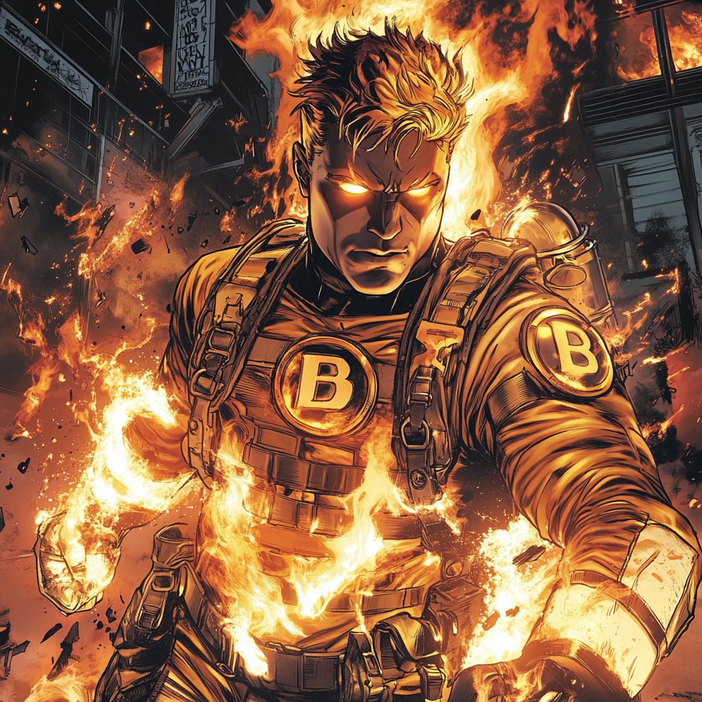

Backdraft: Forged in the Flames

Born in the Heat Daniel “Danny” Calloway grew up in a family of firefighters, a Boston institution spanning three generations. Despite his father’s warnings about the dangers of the job, Danny was determined to follow in their footsteps.
Into the Fire Becoming a firefighter at twenty-one, Danny quickly rose to the ranks of smokejumper. During a massive wildfire in western Massachusetts, he and his team were trapped. As the flames closed in, his latent mutation activated—allowing him to absorb and redirect fire rather than be consumed by it.
A Firefighter Reforged Tests confirmed his mutation, making him fireproof and granting him control over flames. While some in the department saw him as an asset, others feared his powers. His father struggled to accept his transformation.
The Brotherhood of the Flame Recruited by the Boston Avengers Academy, Danny initially resisted, wanting to remain a firefighter rather than a superhero. However, fellow firefighter-mutants Floodline and 9-Alarm convinced him that his powers could be used to save more lives than ever before.
The Fire That Fights Back At BAA, Danny earned the name Backdraft, mastering his ability to manipulate fire. With training from Floodline and 9-Alarm, he refined his control, balancing raw power with precision.
Though part of Team Gamma, Danny remains a firefighter at heart. When disaster strikes, when buildings collapse or wildfires rage, he’s always the first one in—because whether firefighter or hero, his duty never changes.